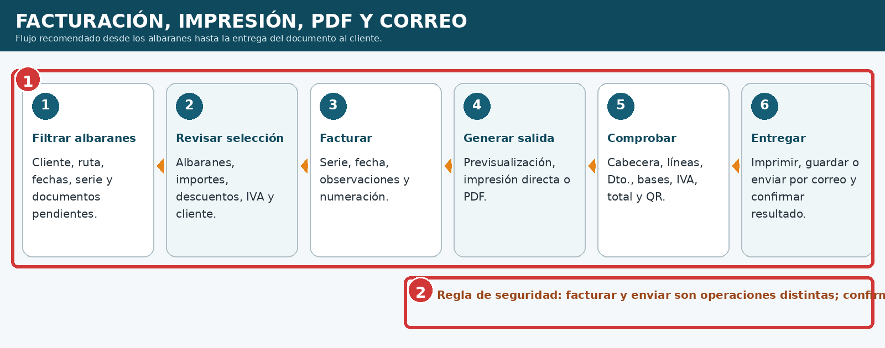
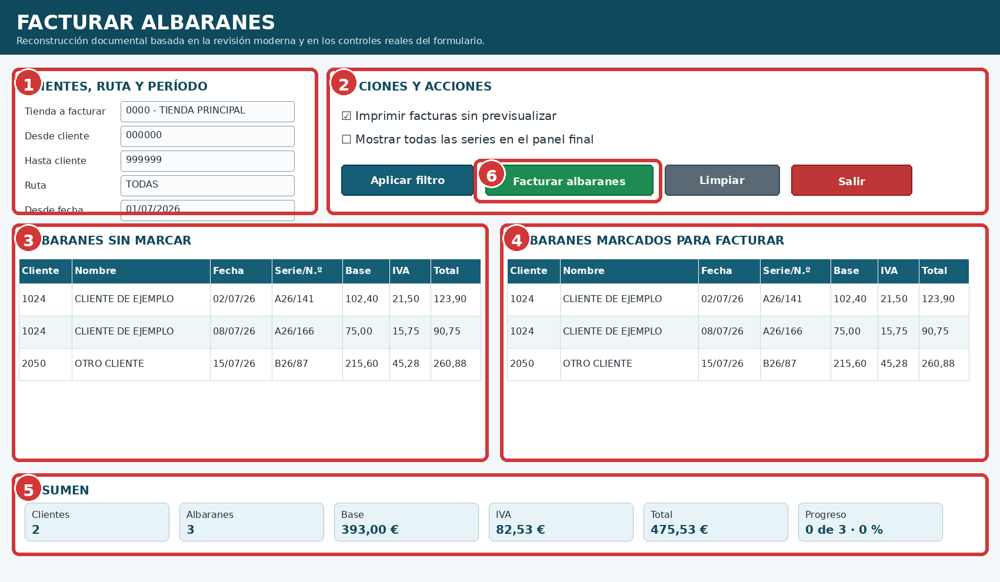
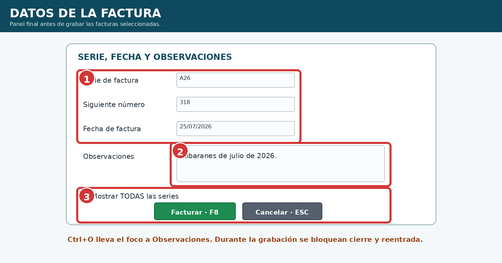
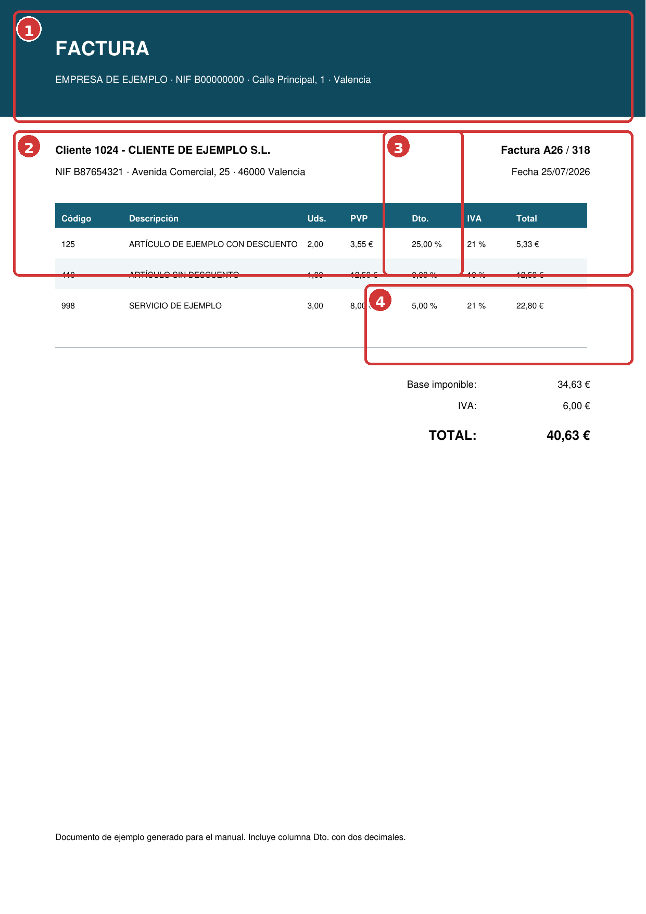
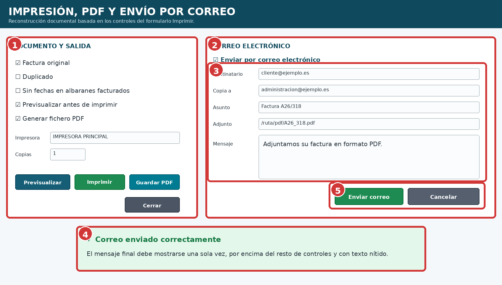
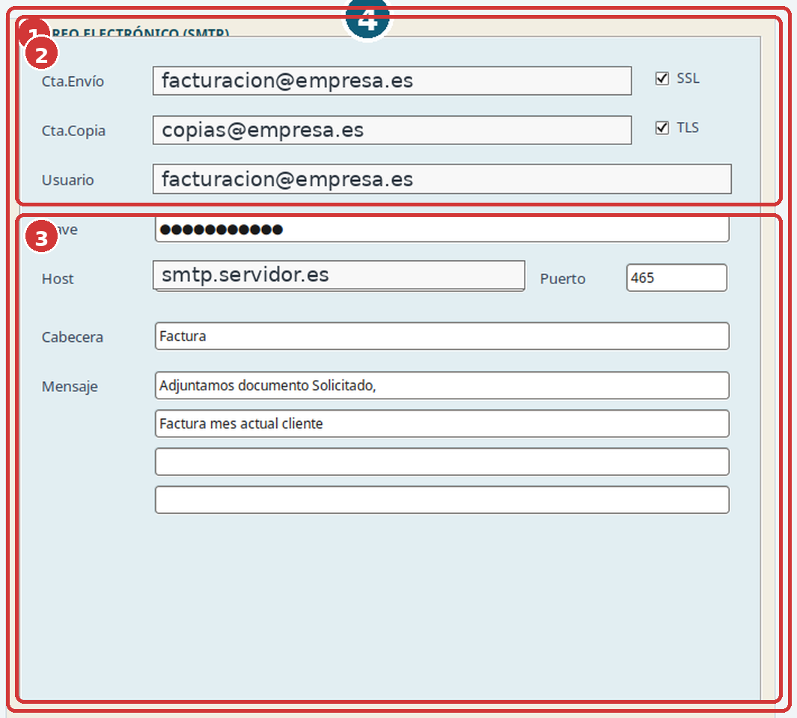
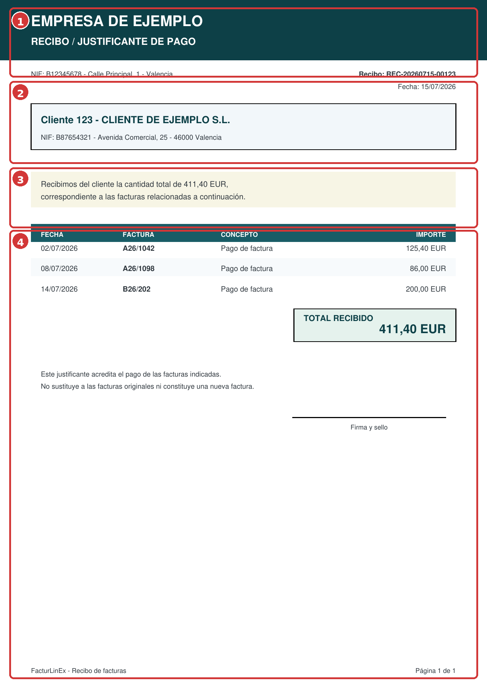

Facturación, impresión, PDF y correo
Edición v1.2 · Mantenimiento y solución de problemas ilustrado
8.1 Flujo general de facturación y salida #
Facturar, imprimir y enviar son operaciones relacionadas, pero no equivalentes. El procedimiento seguro confirma primero los albaranes que se convertirán en factura, revisa después el documento generado y finalmente entrega una sola salida al cliente.

| N.º | Bloque | Comprobación |
|---|---|---|
| 1 | Seis etapas | Filtrar, revisar, facturar, generar salida, comprobar y entregar. |
| 2 | Regla de seguridad | No repetir una acción hasta confirmar el resultado de la anterior. |
8.2 Facturación de albaranes #
La pantalla permite filtrar por tienda, clientes, ruta, fechas y serie; separar albaranes disponibles y marcados; y revisar los totales antes de grabar. Aunque los grids pueden ordenarse visualmente, antes de facturar debe restaurarse internamente el orden por cliente y fecha para conservar la agrupación económica correcta.

| N.º | Zona | Uso |
|---|---|---|
| 1 | Clientes, ruta y período | Delimita los documentos consultados. |
| 2 | Opciones y acciones | Previsualización, series, filtros, facturación y salida. |
| 3 | Sin marcar | Albaranes disponibles. |
| 4 | Marcados | Documentos elegidos para facturar. |
| 5 | Resumen | Clientes, documentos, base, IVA, total y progreso. |
| 6 | Facturar albaranes | Abre serie, fecha y observaciones. |
| Atajo | Acción |
|---|---|
| F5 / F6 | Desde / Hasta cliente. |
| F7 / F8 | Desde / Hasta fecha. |
| F9 | Aplicar filtro. |
| F10 | Facturar albaranes. |
| ESC | Cerrar la pantalla principal. |
8.3 Serie, fecha y observaciones #
El panel final confirma la serie, el número siguiente, la fecha fiscal y las observaciones. ESC cancela solo el panel; Ctrl+O lleva el foco a Observaciones; F8 inicia la grabación.

| N.º | Zona | Revisión |
|---|---|---|
| 1 | Serie, número y fecha | Identificación fiscal correcta. |
| 2 | Observaciones | Texto que acompañará al documento. |
| 3 | Confirmación | F8 factura; ESC cancela el panel. |
8.4 Comprobaciones antes de facturar #
- Albaranes del cliente correcto.
- Sin documentos ya facturados o anulados.
- Serie, número y fecha correctos.
- Cantidades, descuentos e IVA coinciden con el origen.
- Totales del resumen comprobados.
- Previsualización o impresión directa elegida conscientemente.
8.5 Factura PDF y columna de descuento #
Cuando una línea lleva descuento, la factura debe mostrar la columna Dto. entre PVP y Total línea, con porcentaje y dos decimales. Esto permite explicar el importe neto sin obligar al cliente a reconstruir el cálculo.

| N.º | Zona | Revisión |
|---|---|---|
| 1 | Empresa | Emisor y datos fiscales. |
| 2 | Cliente y factura | Destinatario, serie, número y fecha. |
| 3 | Líneas y Dto. | Cantidad, PVP, descuento, IVA y total. |
| 4 | Resumen | Base, IVA y total final. |
8.6 Previsualización, impresión directa y PDF #
| Salida | Uso | Precaución |
|---|---|---|
| Previsualizar | Primera prueba o plantilla modificada. | Confirmar que el visor muestra el documento actual. |
| Imprimir directamente | Circuito estable con impresora validada. | No repetir la orden sin comprobar. |
| Guardar PDF | Archivo o envío por correo. | Evitar rutas erróneas o adjuntos antiguos. |
- Seleccione el documento.
- Genere la salida.
- Revise cabecera, datos fiscales, líneas, Dto., bases, IVA, total y QR.
- Compruebe que no hay columnas cortadas, caracteres incorrectos ni páginas vacías.
- Guarde, imprima o envíe solo después de revisar.
8.7 Pantalla de impresión y envío por correo #

| N.º | Zona | Uso |
|---|---|---|
| 1 | Documento y salida | Original, duplicado, previsualización, PDF, impresora y copias. |
| 2 | Correo | Activa el bloque de envío. |
| 3 | Mensaje | Destinatario, copia, asunto, adjunto y cuerpo. |
| 4 | Aviso final | Resultado único, legible y en primer plano. |
| 5 | Enviar | Inicia el envío tras la comprobación. |
8.8 Configuración SMTP #
Antes de enviar desde una factura, valide cuenta, usuario, clave, host, puerto, SSL/TLS, asunto y mensaje predeterminado.

| N.º | Zona | Contenido |
|---|---|---|
| 1 | Bloque SMTP | Conjunto de parámetros del correo. |
| 2 | Cuenta y seguridad | Cuenta, copia, usuario, clave, SSL y TLS. |
| 3 | Servidor y mensaje | Host, puerto, cabecera y texto. |
- Destinatario correcto.
- Asunto identifica la factura.
- PDF recién generado y adjunto.
- Cuerpo del mensaje adecuado.
- Confirmación final visible.
8.9 Recibo o justificante de facturas #
El recibo PDF puede combinar facturas marcadas y filas seleccionadas con Ctrl o Mayús, sin duplicar una factura que esté en ambos grupos. Vista previa y Guardar PDF no deben cambiar Pagado; solo la acción específica de imprimir y marcar pagadas puede actualizar el estado tras aceptar todos los trabajos.

| N.º | Zona | Contenido |
|---|---|---|
| 1 | Empresa y recibo | Emisor, número y fecha. |
| 2 | Cliente | Identificación fiscal. |
| 3 | Facturas y total | Documentos incluidos y cantidad recibida. |
| 4 | Aclaración | El justificante no sustituye a las facturas. |
8.10 Plantillas .lrf y compatibilidad #
Las plantillas de LazReport enlazan objetos con datasets. El fichero visible no siempre es el que se carga: la ruta puede construirse dinámicamente o depender de configuración.
| Síntoma | Causa | Acción |
|---|---|---|
| Undefined symbol dbImprimir."IMP5" | La plantilla solicita un campo ausente. | Localizar el Memo y ajustar plantilla o dataset. |
| Error SQL cerca de AND | Filtro incompleto o parámetro vacío. | Revisar la SQL final. |
| Documentos.lrf aparece sin referencia visible | Nombre o ruta dinámicos. | Buscar LoadFromFile y configuración. |
| Columnas cortadas | Anchos incompatibles tras añadir Dto. | Reajustar y previsualizar varias facturas. |
8.11 Procedimiento recomendado #
- Seleccione tienda, clientes, ruta, fechas y serie.
- Aplique el filtro y revise grids y resumen.
- Marque únicamente los albaranes correctos.
- Confirme serie, número, fecha y observaciones.
- Espere a que termine el progreso.
- Previsualice la primera factura.
- Compruebe Dto., bases, IVA, total y datos fiscales.
- Imprima, guarde PDF o active el correo.
- Revise destinatario, asunto, cuerpo y adjunto.
- Confirme el aviso final antes de continuar.
8.12 Errores frecuentes y lista final #
| Síntoma | Comprobación |
|---|---|
| Agrupación incorrecta | Restaurar orden por cliente y fecha. |
| Progreso invisible | Usar barra y texto de alto contraste. |
| Falta Dto. | Confirmar generador y plantilla reales. |
| Panel detrás | Corregir orden Z y primer plano. |
| Texto verde emborronado | Evitar etiquetas superpuestas. |
| Correo sin adjunto | Comprobar ruta y PDF actual. |
| Envío duplicado | Esperar el resultado antes de repetir. |
| IMP5 no definido | Corregir plantilla/dataset del circuito exacto. |
- Filtro y albaranes correctos.
- Serie, número y fecha revisados.
- Proceso completado una sola vez.
- PDF legible y completo.
- Dto. visible con dos decimales.
- Bases, IVA y total coherentes.
- Plantilla respaldada e identificada.
- Impresora o ruta PDF correctas.
- Destinatario y adjunto comprobados.
- Avisos visibles y sin superposición.
- Cuadros, números y leyendas coinciden.